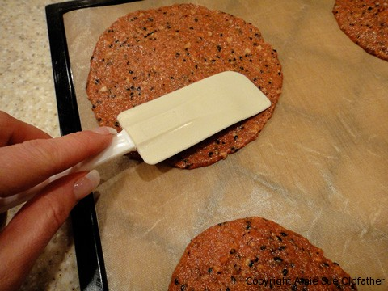
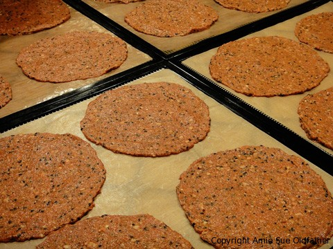

Sun-Dried Tomato and Sesame Wraps

~ raw, vegan, gluten-free, nut-free ~
These wraps turned out just gorgeous. They look cooked, don’t they? Not to worry, they were only dehydrated. We can thank the sun-dried tomatoes for their color variances and beautiful look.
This recipe can be quite versatile; you can spread the batter out thinly to make wraps, keep it more thick to make bread-like crackers or refrain from spreading it out too much and end up with a real hardy cracker. Don’t you just love having that control?! Make one batch of batter, split it up and make a little of all of them!
Ingredients:
yields 5 cups batter / 18 / 6″ wraps
- 5 plum tomatoes, chopped
- 1 cup sun-dried tomatoes, soaked in warm water for 30 minutes
- 3/4 cup ground flax seeds
- 1/4 cup raw sunflower seeds, soaked
- 1/4 cup black sesame seeds
- 2 Tbsp tamari or nama shoyu
- 1 tsp dried oregano
- 2 tsp dried basil
- 1 clove garlic
- 1/4 tsp ground black pepper
Preparation:
- In the blender puree the 5 tomatoes first.
- Combine all of the ingredients except for the sunflower and sesame seeds until it creates a thick sauce.
- Now add the seeds and blend till mixture is thick and uniform, don’t puree the seeds (don’t lose all the texture).
- To make circular wraps, pour 1/4 cup of the mixture onto a teflex dehydrator sheet and use a spatula to spread it out evenly, in a circular motion. This should spread out to create a 6″ circle.
- Dehydrate at 115 degrees (F) for 2 hours. Flip the bread onto the mesh screen and peel off the teflex sheet.
- If the teflex doesn’t come off to willingly, continue drying for about another hour. Then try again.
- After the wraps are on the mesh sheet, continue drying for about 4 hours.
- Check every once in a while, stopping the process once the desired dryness is achieved.
- If you are making crackers and the batter is thicker, allow them to dry for about 4-6 hours before you try to flip them onto the mesh sheets, again if the teflex doesn’t peel off easily, dry a bit longer. Once you can peel off the teflex sheet and they are on the mesh sheet, score them into desired sized cracker shapes and continue drying for 6-10 hours.
- Filling ideas:
- 2 large Romaine lettuce leaves
- 1 cup alfalfa sprouts (you may substitute clover sprouts if you wish)
- 1/2 ripe avocado, sliced
- 6 thin slices of cucumber
- 1/2 Roma tomato, sliced
- 6 thin slices of onion
- 1 tablespoon dressing

Tip: When spreading the batter to make your circular wrap use a spatula or
off-set spatula, use a light hand and hold it almost flat so you
can spread the batter evenly. Turn the tray as you create the circle.
If your batter is a tad sticky, it helps to dip your spatula in water.
Again, the key is to use a light hand and be gentle. Soon you get the hang of it.

© AmieSue.com